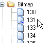
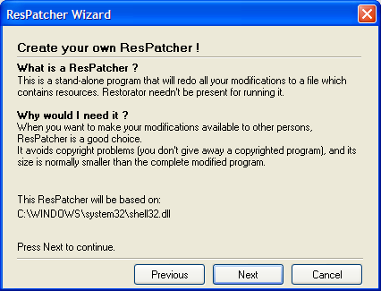
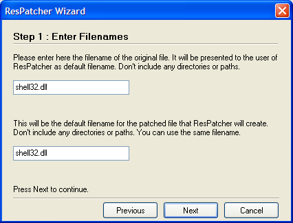
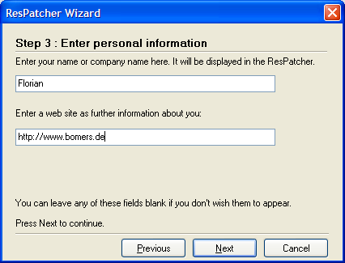
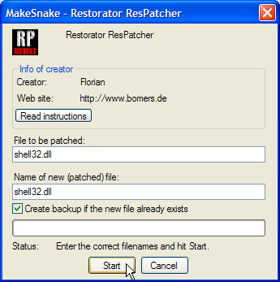

|
Help Overview Manual Tutorials FAQ Purchase Restorator Web |
Restorator
ResPatch Tutorial
Tutorial: Creating a ResPatcher
This tutorial shows how you can distribute your modifications to your friends.
1. About ResPatcher
With Restorator you can create a special program that re-applies exactly your modifications to a file. It is small in size and people who use it do not have to have installed Restorator. It is not necessary to give away the complete exe or dll file, and like this you won't run into copyright problems.
2. Creating the ResPatcher for the modified Notepad
Open again shell32.dll in C:\WINDOWS\SYSTEM32 and modify it like in tutorial 2
The
bitmap 131 should have a small blue arrow to show that it has been
changed before.
Now press the RP tool button to start the ResPatcher Wizard:

Watch the filename that is used.
Press Next to proceed:

using the
identical filename for input file and modified output file.

The ResPatcher
is created in C:\.


There will be a summary and final dialog before you're done.
Close shell32.dll in Restorator, you cannot modify it otherwise.
3. Looking at the created ResPatcher
In the folder of C:\, you can see the generated ResPatcher: Its name is "MakeSnake.exe" as specified in step 2 of the ResPatcher wizard. And... its size is merely 87 KB ! Obviously it's more practical to give away these 87KB than the 7MB of shell32.dll. This ResPatcher contains in compressed form the changed splash screen - as listed by the summary in step 5.
4. Test the ResPatcher
Close shell32.dll in Restorator and run the ResPatch MakeSnake.exe as a test (copy it to C:\Windows\System32 first):

The 2 text fields correspond exactly to the entries you made in step 1 and step 2. Hit "Start", and the file "shell32.dll" is patched. When you give it to somebody else, tell them to start the ResPatcher and hit the "Read Instructions" button.
You can pass command line parameters to adjust the behavior of the ResPatcher (e.g. to supply it with an installation routine). See the reference manual for a detailed explanation of the commmand line parameters.
 Send the MakeSnake.exe to your friends and share this little guy.
Send the MakeSnake.exe to your friends and share this little guy.
Remark:
You can only create ResPatchers with the purchased version of Restorator.
Copyright 1997-2007 by bome.com